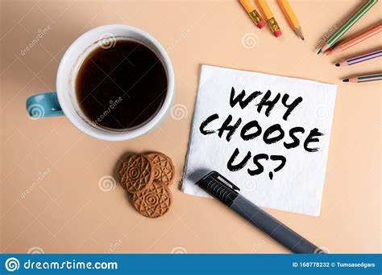
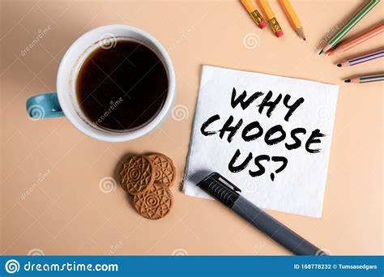
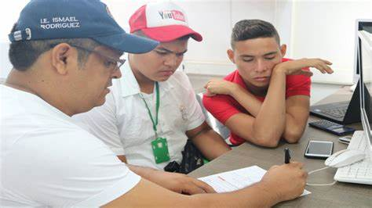
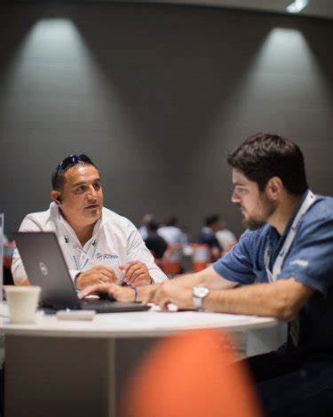
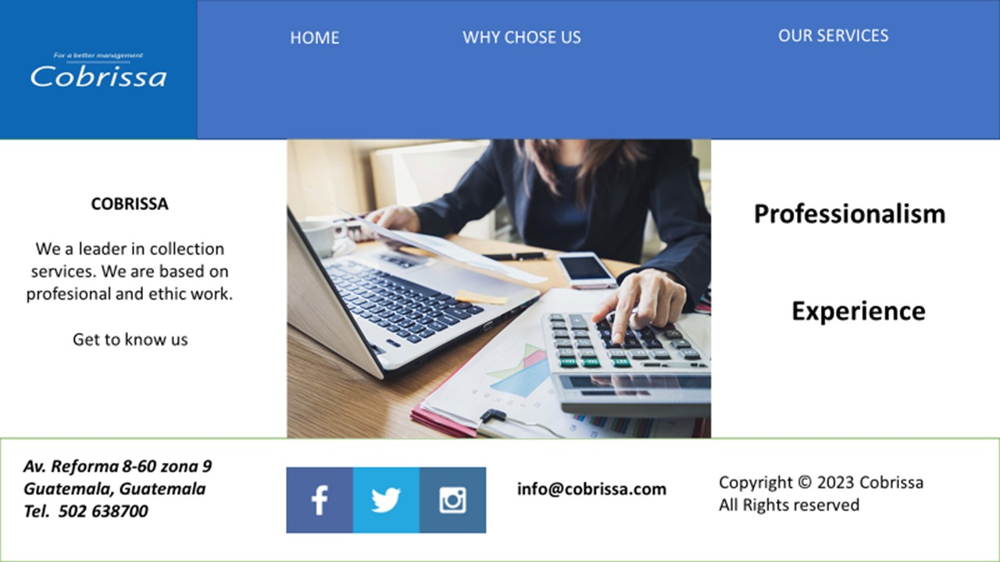
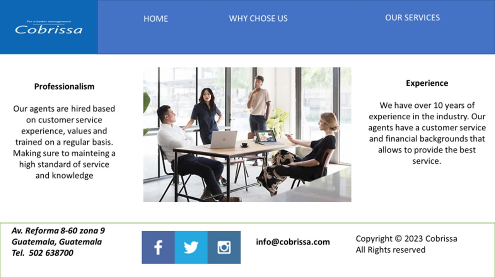
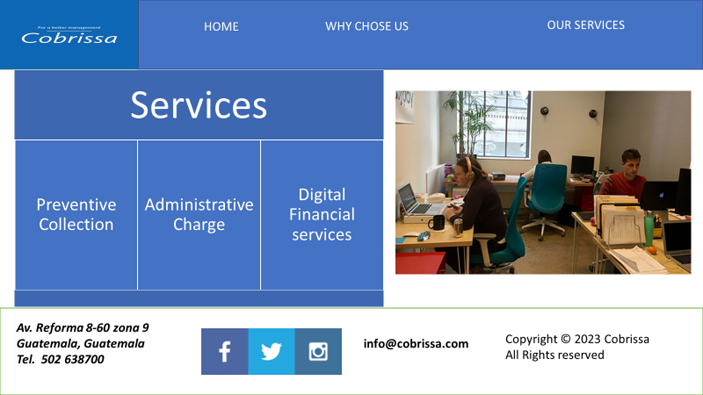

Purpose
I want to make a website for a small company dedicated to outsourcing collection-debt services and specializing in consumer credit and microcredit
.The purpose of the page is to publicize the services offered by the company as well as its trajectory for more than ten years of presence in the market
Audience
The target audience are banking institutions as well as companies dedicated to the consumer segment or small and medium-sized companies and that are dedicated to financing in such segments
Cobrissa
For a better management

Why choose us?
Style Guide
Color Palette
Palette URL: https://coolors.co/396e94-e7c24f-a43312-381d2a-aabd8c| Primary | Secondary | Accent 1 | Accent 2 |
|---|---|---|---|
| [#1F7A8C] | [#E1E5F2] | [#022B3A] | [#BFDBF7 |
Typography
Heading Font: Bice blue
Paragraph Font: Saffron
Heading Font
I chose Bice Blue as Heading Font because it´s gives a feeling of tranquility, optimism and is something that the philosophy of the company wants to communicate
Paragraph Font
I think this font comunicate gives the feeling of professionalism
Navigation
Site Map
Content
Home page
In a competitive and changing environment, one of the questions to ask is why outsource financial services to a small business?
Knowledge of the market and having a high-level human team means that the company is highly effective in recovering portfolios. This effectiveness is evidenced in the high recovery rates and in those that stand out from the competition.
The firm specializes in credit risk management mainly in the consumer segment, micro, small and medium-sized companies. He also has experience in managing credit card and mortgage credit collections. The company has collected modern and appropriate technological collection systems that allow us to meet the expectations of our customers. The staff has also been selected with the highest standards of values: Integrity, Confidentiality, Professionalism, Honesty, etc.
Images for the Home page
The experience obtained allows us to offer collection services, mainly in the mass segments: consumer loans, housing loans, credit cards, retail, etc. Likewise, in the segments of micro, small and medium-sized companies. Our infrastructure allows us to offer collection services in the following stages: Administrative Collection Refers to preventive management and arrears of less than 30 days. Prejudicial Collection. It is the collection process where the resources of negotiation, restructuring of the client's payment are used.
We offer the collection service through the main general techniques applied: Call center. There is the ability to carry out automated telephone management, by client, portfolio, amount, and date; and different segmentations more to enhance management./p>
Visits are made to homes or work centers, with a specific control and adequate follow-up when considered appropriate, to achieve a negotiation with the client. In the microcredit segment and mainly community banks, the following prejudicial collection strategy is proposed: 1. Telephone calls mainly for the earliest arrears. 2. Home visits, with emphasis on visiting the members of the Board of Directors. 3. Collection messages written with increased intensity of collection. 4. Location of references. 5. Visits to conciliation centers of the Judicial Branch.
Advantajes: Reduction of Operating Costs The high effectiveness and collection based on what has been done guarantees a reduction of operating costs. Confidentiality in the professional management of information The high ethical values of our organization guarantee confidentiality and professionalism in the management of your information. Quick out-of-court management of your accounts The specialization of our company allows you to obtain effective out-of-court management of your accounts more quickly.
 

[Page 2]
Cobrissa, it is a small business dedicated to outsourcing financial services, especially high delinquency portfolio recovery. The focus of its services is oriented towards banking porfolios in the consumer segment loan, microcredit loan and credit cards.
Despite operating in a highly competitive environment, the company has been able to remain in the market for more than ten years, which has allowed it to accumulate experience to manage the different customer profiles that stand out in these segments of the credit market. Many times, having a small scale of activities allows to have agility to be able to act in the market and that has been the main strength of the company and that has allowed it to have a leadership by staying among the first places of the companies that provide collection services in the main banks of the country.
Images for the Page 2
 [Page 3]
One of the key factors that has allowed the company to stay in the market for so long, considering that the business mortality rate in this segment is quite high, has been the institutionalization of high standards in the management of human talent and that has allowed to have a low turnover of personnel and that allows them to acquire experience in the handling of the clients. This customer management has included permanent training and supervision, which has made it possible to adapt the best collection techniques and gradually incorporate new technological knowledge in collection techniques and in the management of data intelligence, and from which a better knowledge of the profiles.
Images for the Page 3
Wireframes
Create three wireframes for your site. One for each page and list them here
Home
[Any additional details about home that the wireframe does not make clear]
[Page 2]
[Any additional details about page 2 that the wireframe does not make clear]
[Page 3]
[Any additional details about page 3 that the wireframe does not make clear]